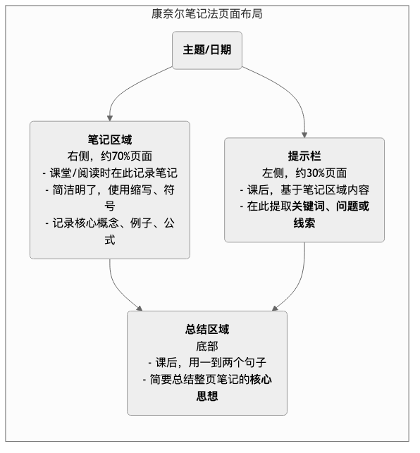

康奈尔笔记法¶
在听课、开会或阅读时，我们常常会陷入一种两难的境地：如果奋笔疾书，试图记下所有内容，往往会因为跟不上思路而“只见树木，不见森林”；如果只听不记，又会在几小时或几天后，将大部分重要信息忘得一干二净。康奈尔笔记法（Cornell Note-Taking System），是由康奈尔大学的教育学教授沃尔特·波克（Walter Pauk）在20世纪50年代设计的、一套旨在解决这一问题的、享誉全球的高效笔记系统。
康奈尔笔记法的核心，不在于“如何记”，而在于通过一种独特的页面布局，来系统性地整合记录、简化、复习和反思这几个关键的学习环节。它将一页笔记，清晰地划分为三个（或四个）不同的区域，每一个区域都有其独特的功能。这种结构化的方法，强迫我们在记笔记的同时，就在进行主动的思考和信息加工，从而极大地提升了学习的效率、深度和知识的长期留存率。
康奈尔笔记的页面布局¶
康奈尔笔记法的精髓，就在于其“一页三分”的独特页面结构。
- 主笔记区（Note-Taking Area）：位于页面右侧，是面积最大的区域。这是你在听课或阅读时，进行实时记录的地方。
- 线索栏（Cue Column）：位于页面左侧的、一个较窄的栏目。这是你在课后，用来提炼和简化主笔记区内容的地方。
- 总结栏（Summary Area）：位于页面底部的区域。这是你在课后，用来概括和总结整页笔记核心思想的地方。
康奈尔笔记法模板¶

如何使用康奈尔笔记法（5R原则）¶
康奈尔笔记法的创始人，将其使用方法，总结为五个逻辑清晰的步骤，即“5R原则”。
-
记录（Record）
- 时间：在听课或阅读期间。
- 行动：在主笔记区（右侧），尽可能高效地记录下重要的信息。不必追求句子的完整性，多使用自己的话、缩写、符号和列表，来捕捉核心的论点、概念、例子和公式。
-
简化/提问（Reduce/Question）
- 时间：在听课或阅读之后，尽快进行（最好是在当天）。
- 行动：仔细地回顾主笔记区的内容。然后，在线索栏（左侧），针对右侧的每一条笔记，提炼出一个关键词或一个简短的问题。这些线索，将成为你未来复习时的“触发器”。例如，如果右侧记录了关于“光合作用”的详细过程，那么左侧的线索就可以是“光合作用的过程？”或“光合作用的要素？”
-
背诵/复述（Recite）
- 时间：在完成简化之后。
- 行动：遮住右侧的主笔记区，只看左侧线索栏里的关键词或问题。然后，尝试用自己的话，完整、清晰地将右侧的内容复述出来。这个过程，是检验你是否真正理解和记住了知识的关键，是一种主动的回忆练习。
-
反思（Reflect）
- 时间：在复述之后。
- 行动：花几分钟时间，进行更深层次的思考。问自己：“这些知识的意义是什么？”“它和我已经知道的其他知识有什么联系？”“我如何才能应用这些知识？”将你的这些思考和感悟，可以在笔记的空白处或用不同颜色的笔标注出来。
-
复习（Review）
- 时间：定期地、快速地进行。
- 行动：每天花10分钟，快速地浏览一遍你所有笔记的线索栏和总结栏。这种高频率、低负担的重复，是对抗“艾宾浩斯遗忘曲线”、实现知识长期记忆的最有效方法。
应用案例¶
案例一：学生听一堂历史课
- 主题：法国大革命的起因。
- 主笔记区（右侧）：记录下老师讲到的“三级会议”、“财政危机”、“启蒙思想”、“攻占巴士底狱”等关键事件和概念的细节。
- 线索栏（左侧）：课后提炼出问题，如“革命前的社会结构？”、“启蒙思想的核心？”、“革命的导火索？”
- 总结栏（底部）：用一句话概括：“18世纪末，法国在深刻的社会不平等、财政危机和启蒙思想的共同作用下，最终通过攻占巴士底狱，引爆了资产阶级大革命。”
- 复习：在期末考试前，他不需要再去重读整本教科书，只需快速地浏览自己所有笔记的左侧线索栏和底部总结栏，就能高效地串起整个学期的知识框架。
案例二：参加一场项目启动会
- 主题：Q4“飞鸟计划”项目启动会。
- 主笔记区（右侧）：记录下会议中明确的项目目标、关键交付成果、时间节点、以及各个部门的负责人。
- 线索栏（左侧）：会后整理出“项目核心目标？”、“我的具体职责？”、“关键风险？”、“需后续跟进的人？”等提示。
- 总结栏（底部）：“本次会议明确了‘飞鸟计划’的目标是在年底前上线V1版本，我的核心任务是负责用户调研模块，需在本周五前与产品经理小王对齐具体需求。”
- 应用：这份结构化的笔记，成为他后续跟进工作、撰写会议纪要的清晰依据。
案例三：阅读一本非虚构类书籍
- 主题：阅读《思考，快与慢》第五章。
- 主笔记区（右侧）：记录下关于“系统1”和“系统2”的核心特征、经典实验案例（如“琳达问题”）以及作者的核心论证过程。
- 线索栏（左侧）：提炼出“系统1 vs. 系统2？”、“什么是启发式？”、“锚定效应的例子？”等问题。
- 总结栏（底部）：“我们的大脑存在快、慢两个思考系统，直觉性的系统1虽然高效，但常常会因各种认知偏误而导致非理性决策。”
- 反思：在“反思”环节，他可能会写下：“这解释了为什么我总是在超市打折时买一堆不需要的东西。我应该在做重要决策时，有意识地启动系统2进行慢思考。”
康奈尔笔记法的优势与挑战¶
核心优势
- 促进主动学习：它强迫你不仅仅是机械地抄录，更要在课后进行简化、提问和总结，这是一个深度加工信息的主动过程。
- 学习与复习效率极高：结构化的笔记，使得复习时重点突出、一目了然，极大地提升了效率。
- 增强知识留存：“复述”和“定期复习”这两个环节，完美地契合了认知科学中关于“主动回忆”和“间隔重复”的记忆原理。
- 培养系统性思维：通过持续地提炼要点、总结概括，能够有效地训练我们的归纳和系统思考能力。
潜在挑战
- 需要投入额外时间：与简单的线性笔记相比，康奈尔笔记法在课后，需要你投入额外的时间去进行整理和总结。
- 不适用于所有场景：对于一些高度发散的、非结构化的讨论（如头脑风暴），或者需要大量绘图的学科（如建筑、艺术），传统的康奈尔笔记法可能不是最佳选择。
- 需要坚持和自律：其最大的威力，体现在“5R”原则被完整、持续地执行。如果只做了第一步“记录”，而忽略了后续的整理和复习，其效果将大打折扣。
延伸与关联¶
- 思维导图：对于一些高度关联、非线性的主题，可以先用思维导图来发散和组织思路，然后再将其核心内容，整理成结构化的康奈尔笔记，以便于记忆和复习。
- 费曼学习法：康奈尔笔记法中的“背诵/复述”环节，与费曼学习法中“教给孩子”的核心理念高度一致，都是通过“输出”来检验和巩固“输入”。
来源参考：沃尔特·波克（Walter Pauk）博士在其1962年出版的畅销书《如何在大学中学习》（How to Study in College）中，首次向世界介绍了康奈尔笔记法。该方法至今仍被全球各大高校和教育机构，推荐为最有效、最科学的笔记方法之一。